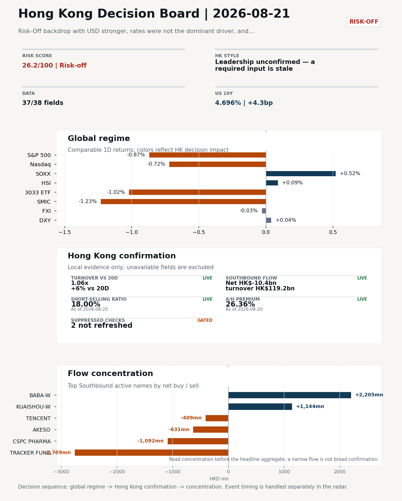
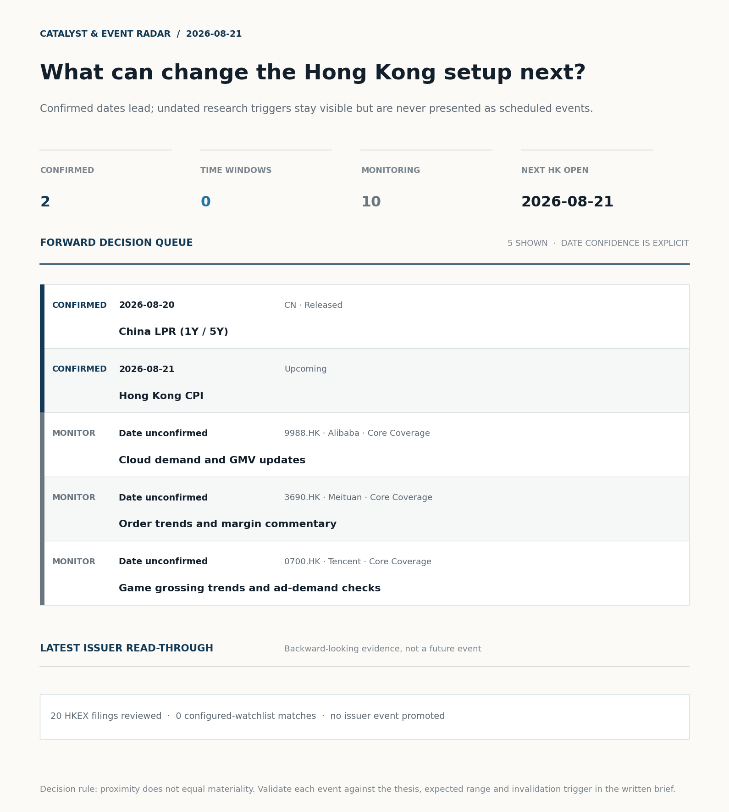
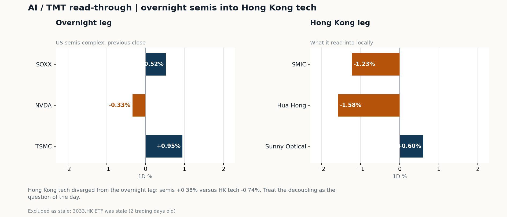
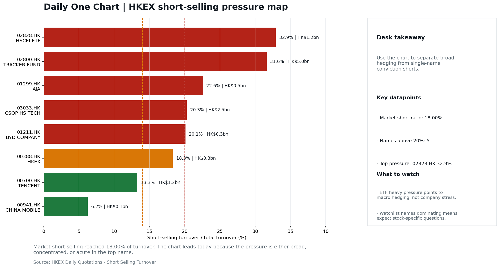
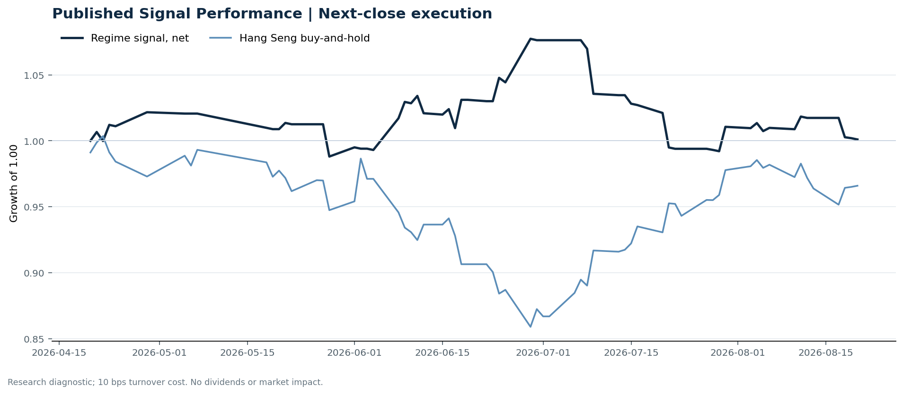

In this issue
Morning Research Workbench | 2026-08-21
Executive Summary
- Did yesterday's call work? UNRESOLVED - Hang Seng Index moved +0.09%, inside the 0.25% noise band, so the call is neither confirmed nor broken.
- What changed overnight? Semis led higher: SOXX +0.52%, NVDA -0.33%, TSMC +0.95%.
- What it means for AI/TMT Style call withheld: 3033.HK ETF was stale (2 trading days old). The stale input is excluded from the risk score.
- What to watch today Hong Kong CPI (2026-08-21). Watch whether SMIC and Hua Hong trade with HSCEI rather than with the overnight semis leg.
Visual Dashboard

Catalyst & Event Radar

Chart read: 2 dated event(s) lead the queue; 10 undated trigger(s) remain explicitly in monitoring.
Source: Public calendars, issuer disclosures and configured research watchlists
Layer 1 | Scan (5 min)
1.1 Yesterday's Call
Verdict: UNRESOLVED. Hang Seng Index moved +0.09%, inside the 0.25% noise band, so the call is neither confirmed nor broken.
| Benchmark | From | To | Realised move |
|---|---|---|---|
| Hang Seng Index | 2026-08-19 | 2026-08-20 | +0.09% |
| Hang Seng TECH ETF (3033.HK) | 2026-08-19 | 2026-08-20 | +0.00% |
Recent record. 6 confirmed / 4 broken over the last 10 scoreable calls (60.0% hit rate). This is a directional close-to-close diagnostic, not a track record.
1.2 Global Asset Price Dashboard
Decision-useful subset: each row states the implication and the next test. Descriptive secondary monitors are kept out of the five-minute scan.
| Signal | Last / move | Interpretation | Confirmation / invalidation |
|---|---|---|---|
| S&P 500 | 7,641.16 / -0.87% | US beta weakened, reducing the external risk cushion for Hong Kong. | Confirm with Nasdaq breadth and a same-direction VIX move; invalidate if offshore-China proxies diverge. |
| Nasdaq 100 | 29,213.16 / -0.72% | Growth outperformed broad beta, a supportive style signal for Hong Kong internet and platform names. | Confirm through the 3033.HK ETF versus HSI leadership; higher US yields would weaken the read. |
| Hang Seng Index | 25,495.07 / +0.09% | Hong Kong broad beta strengthened, but local flow must confirm whether the move is investable. | Confirm with Southbound participation and breadth; invalidate if USD/CNH weakens while turnover fades. |
| Hang Seng TECH ETF (3033.HK) | 4.6520 / -1.02% | Hong Kong growth lagged, so broad-index strength is not yet a duration signal. | Confirm with stable CNH, Southbound buying and lower yields; invalidate on growth underperformance with rising yields. |
| US 10Y | 4.6960% / +4.3bp | The yield proxy rose, tightening the discount-rate backdrop for long-duration Hong Kong growth. | Confirm through Nasdaq and 3033.HK ETF relative performance; invalidate if growth leads despite the opposing rate move. |
| China 10Y | 1.68% / +0.0bp | Local yields were stable and provide little incremental macro signal. | Use CSI 300, copper and official credit/activity data to separate growth optimism from demand weakness. |
| DXY | 98.87 / +0.04% | The dollar was range-bound and adds little directional information. | Confirm with USD/CNH moving in the same risk direction; divergence reduces conviction. |
| USD/CNH | 6.7150 / -0.06% | A stronger offshore renminbi supports the external-risk backdrop for Hong Kong equities. | Confirm with FXI, the 3033.HK ETF proxy and Southbound flow; invalidate if equities move opposite to FX with strong local participation. |
| VIX | 16.01 / +7.52% | Higher implied volatility raises the tail-risk premium and weakens risk-on conviction. | Confirm with equity breadth and credit-sensitive assets; invalidate if lower VIX accompanies narrow or falling equities. |
Secondary monitors retained in the source bundle: CSI 300, CN-US 10Y spread, USD/HKD, Brent crude, COMEX gold, Copper.
1.3 Hong Kong Key Data Quick Check
Coverage gate: 1 unavailable local checks are suppressed here and retained in validation metadata.
| Check | Value | Status | Source / as of | Why it matters |
|---|---|---|---|---|
| Main Board turnover vs 20D | 1.06x | +6% vs 20D | Live local | HKEX | 2026-08-20 | Trailing 20-session average turnover was HK$253.1bn. |
| Southbound / Northbound net flow | Southbound Net HK$-10.4bn | turnover HK$119.2bn | Northbound Turnover HK$286.2bn | net not reported | Live local | HKEX Connect | 2026-08-20 | Southbound net buy is calculated from HKEX disclosed buy and sell turnover. |
| Short-selling ratio | 18.00% | Live local | HKEX | 2026-08-20 | Official HKEX stock-level short-selling table, aggregated as a share of total market turnover. |
| AH premium index | 26.36% | Live public | Yahoo | 2026-08-20 | Fixed 10-name basket, equal-weighted, both legs priced on the same date; comparable across dates. Covered-pair average was +32.52% across 18 pairs. |
| USD/HKD spot vs band | 7.8428 | Live quote | Yahoo | 2026-08-20 | 72 pips from the weak-side CU (7.8500); monitor HKMA operations and the aggregate balance for a funding squeeze. |
| Hong Kong leadership | Leadership unconfirmed - a required input is stale | Proxy | HSI / HSCEI / 3033.HK ETF relative | 2026-08-20 | Use HSI / HSCEI / 3033.HK ETF relative moves as the opening style read. |
1.4 Decision Board
Composite risk score: 26.2/100 | Regime: Risk-off
| Component | Score impact | Evidence |
|---|---|---|
| US beta | -5.2 | S&P 500 -0.87% |
| Offshore China proxy | -0.1 | FXI -0.03% |
| Dollar pressure | -0.4 | DXY +0.04% |
| Volatility | -10 | VIX +7.52% |
Morning Checklist
- Risk-Off backdrop with USD stronger, rates were not the dominant driver, and Bitcoin outperformed Gold Overnight regime | Start by deciding whether the day is about Risk-Off conditions or a style pivot.
- China LPR (1Y / 5Y) (Released) Macro / policy | Watch whether it changes the day's core market narrative | Industries: Market-wide
- VIX +7.52% High-frequency data | Higher volatility argues for tighter sizing and tighter stops. (second-order macro context)
- Hong Kong CPI (Upcoming) Macro / policy | Rates expectations, the dollar, and growth-equity valuation | Industries: Technology, Internet, Brokers
Layer 2 | Deep Read (20-30 min)
2.1 Overnight Overseas Market Review
Market Setup Core tape. Overnight US equities closed lower (S&P 500 -0.87%, Nasdaq 100 -0.72%) within a Risk-Off tape where rates were not the dominant driver, the USD strengthened (+0.19%), and VIX rose 7.52%. Main driver. The Fed minutes re-introduced a hawkish tail, but the cross-asset signal - Bitcoin +4.67% versus Gold +0.48% - argues the move was more about USD/real-yields than classic safe-haven demand. HK relevance. For Hong Kong, the overseas set is a drag.
Key Drivers
- Fed minutes reintroduced a hawkish tail on US rates, pushing VIX +7.52% and weighing on US equity multiples despite no clean yield surge.
- USD composite +0.19% intraday (range 0.279%) compounded valuation pressure on risk assets and put USD/HKD at 7.8428, 72 pips from the weak-side CU.
- Oil +2.02% intraday (3.87% range) created a split tape.
- US semis tape was divergent (TSMC +0.95%, SOXX +0.52%, NVDA -0.33%), so it does not confirm a clean AI cycle tailwind for HK tech today.
Hong Kong Read-Through Opening implication. Defensive bias with tighter sizing; wait for a refreshed 3033.HK, HSI/HSCEI relative move, and the LPR fix before committing to a style call. Watch Alibaba premarket for China Internet direction and monitor USD/HKD proximity to the 7.8500 weak-side CU for HKMA liquidity signals. Hong Kong style leadership, cross-market levels and flow confirmation are set out in Section 2.2.
Watch Points
- USD composite moved higher by +0.19pct intraday, with a 0.279pct range.
- Main turning points appeared around 2026-08-20 08:05 peak / 2026-08-20 08:25 peak / 2026-08-20 08:50 peak, suggesting event-driven repricing rather than a clean one-way USD move.
- The biggest cross-asset divergence was Bitcoin versus Gold, a spread of 4.19pct.
- Gold moved +0.48pct intraday with a 1.917pct high-low range.
Curated overnight stories
- China LPR (1Y / 5Y) released Why it matters: Highest-priority must-watch macro item (score 95). HK read-through: Direct read-through to HK banks, mainland property developers listed in HK, insurers, and any China-revenue balance sheets sensitive to onshore rates.
- China is defying the global bond yield surge, boosting its diversification appeal Why it matters: Frames China rates as a relative-value anchor versus a rising global yield complex. Relevant to cross-asset allocators who compare CNY/HKD duration to USTs. HK read-through: Supports a constructive bias on China duration proxies tradable from HK (e.g., H-share banks, China SOBM-listed names) and feeds the offshore RMB narrative.
- Fed officials saw need for rate hike if inflation doesn't cool, minutes show Why it matters: Re-introduces a hawkish tail into US rates expectations. HK read-through: Headwind for HK growth/tech multiples and for HKD/USD-sensitive names. Stronger USD + Risk-Off regime noted in the daily theme compounds the drag.
- Stocks making the biggest moves premarket: Walmart, Coinbase, Moderna, Alibaba & more Why it matters: China Internet tape signal (Alibaba is an HK-listed heavyweight and ADR). Graded B with explicit mapping to China Internet leaders and close peers. HK read-through: Direct read on the HK-listed China Internet cohort for 08-21 open, especially names with high beta to BABA ADR.
- VIX +7.52% within a Risk-Off backdrop; USD stronger, Bitcoin outperformed Gold Why it matters: Regime signal: volatility is up and USD bid, which historically pressures HK equities and EM risk assets. HK read-through: Argues for tighter sizing on the HK open, defensive bias in selection, and watch on USD/HKD proximity to the convertibility band.
2.2 Hong Kong / A-share Previous-Day Review
Local Tape Setup Local read. The local tape shows only mild index movement: HSI +0.09% and HSCEI +0.21%, while the Hang Seng TECH ETF proxy is stale by two sessions, so growth leadership cannot be verified. Verification point. Attribution_v1 flags short-selling pressure at 18.00% of turnover as the dominant local drag, and Stock Connect Southbound posted a net -HK$10.4bn outflow. Risk to watch. The overnight setup is risk-off with US equity beta lower, so the open should be judged on whether HSCEI/SOE stability holds or internet/tech gets fresh confirmation.
Style and Local Leadership Style call. Leadership unconfirmed - a required input is stale.
- Evidence: No same-date 3033.HK-versus-HSCEI comparison was possible because 3033.HK ETF was stale (2 trading days old)
- Portfolio meaning: Do not infer Hong Kong style from the headline index alone; wait for relative price and local-flow evidence.
- Cross-market read: Hang Seng +0.09% / HSCEI +0.21% / 3033.HK ETF stale 2d.
- Cross-market read: Offshore China proxy FXI -0.03% and USD/CNH -0.06% frame cross-border risk appetite.
- Cross-market read: USD/HKD last traded around 7.8428, which keeps the Hong Kong funding lens in focus.
Flow Confirmation Official Stock Connect evidence is available; use Section 2.3 to confirm whether local money supports the price action.
Follow-Through Checklist Follow-through check. Confirmation test: watch whether a refreshed 3033.HK outperforms 2828.HK/HSCEI and whether Southbound net flow improves from -HK$10.4bn or the short-selling ratio drops below 18.00%. Northbound net-buy is not reported, so A-share flow confirmation remains incomplete. Failure condition. Any style claim remains invalid while the required relative-performance fields are missing or stale.
2.3 AI / TMT Read-Through

Overnight leg. The overnight semis leg was flat (+0.38% average), so it does not set the direction for Hong Kong tech today. Hong Kong expression. Let local flow and style leadership drive the tech read rather than the overnight tape. Observable test. Watch whether SMIC and Hua Hong trade with HSCEI rather than with the overnight semis leg.
| Name | Role in the chain | 1D | Leg |
|---|---|---|---|
| SOXX | Semis complex | +0.52% | overnight |
| NVDA | AI capex narrative | -0.33% | overnight |
| TSMC | Foundry demand | +0.95% | overnight |
| SMIC | Leading-edge / domestic substitution | -1.23% | Hong Kong |
| Hua Hong | Mature-node pricing cycle | -1.58% | Hong Kong |
| Sunny Optical | Hardware and optics supply chain | +0.60% | Hong Kong |
| 3033.HK ETF | Broad HK tech beta | stale 2d | Hong Kong |
Read with care. Hong Kong tech diverged from the overnight leg: semis +0.38% versus HK tech -0.74%. Treat the decoupling as the question of the day. Coverage caveat. 3033.HK ETF was stale (2 trading days old). Those names are excluded from the averages above.
2.4 Flow Tracker and Attribution
Cross-Asset Attribution
| Driver | Direction | Score | Evidence | HK implication |
|---|---|---|---|---|
| Short-selling pressure | drag | 2.1 | HKEX short-selling ratio was 18.00%. | Elevated short activity argues for extra confirmation before chasing rebounds. |
| Oil and geopolitics | mixed | 1.34 | Oil moved +1.67%. | Split the read between energy/cyclicals support and margin/geopolitical pressure. |
| Global equity beta | drag | 0.87 | S&P 500 moved -0.87%. | Broad beta matters if Hong Kong breadth confirms the overseas signal. |
Local Flow Tracker
Flow Takeaways
- Short-selling pressure is elevated, so local rebounds need cleaner breadth and flow confirmation.
- Stock Connect Southbound: net HK$-10.4bn on turnover HK$119.2bn (as of 2026-08-20).
- Stock Connect Northbound: turnover RMB286.2bn; public file provides total turnover/top active names, not full net-buy.
- AH premium: fixed 10-name basket +26.36% (comparable across dates); covered-pair average +32.52% over 18 pairs; widest premium: China Communications Construction 89.0%.
Stock Connect Southbound Active Names
| # | Ticker | Name | Buy | Sell | Net buy | HKEX turnover rank |
|---|---|---|---|---|---|---|
| 1 | 02800.HK | TRACKER FUND | HK$1.6mn | HK$2,760.2mn | HK$-2,758.7mn | 2 |
| 2 | 09988.HK | BABA-W | HK$4,212.4mn | HK$2,007.2mn | HK$2,205.2mn | 1 |
| 3 | 01024.HK | KUAISHOU-W | HK$2,575.5mn | HK$1,431.6mn | HK$1,143.9mn | 3 |
| 4 | 01093.HK | CSPC PHARMA | HK$252.6mn | HK$1,344.3mn | HK$-1,091.6mn | 3 |
| 5 | 09926.HK | AKESO | HK$120.2mn | HK$750.8mn | HK$-630.5mn | 10 |
AH Premium Dispersion
| Name | A ticker | H ticker | Premium | As of |
|---|---|---|---|---|
| China Communications Construction | 601800.SS | 1800.HK | +89.00% | 2026-08-20 |
| China Life | 601628.SS | 2628.HK | +60.95% | 2026-08-20 |
| China Railway Construction | 601186.SS | 1186.HK | +57.48% | 2026-08-20 |
| China Railway | 601390.SS | 0390.HK | +52.98% | 2026-08-20 |
| Sinopec | 600028.SS | 0386.HK | +37.02% | 2026-08-20 |
HKEX Short-Selling Watch
| Ticker | Name | Short ratio | Short turnover | Total turnover |
|---|---|---|---|---|
| 00388.HK | HKEX | 18.30% | HK$0.3bn | HK$1.9bn |
| 00700.HK | TENCENT | 13.29% | HK$1.2bn | HK$8.9bn |
| 00941.HK | CHINA MOBILE | 6.25% | HK$0.1bn | HK$1.2bn |
| 01211.HK | BYD COMPANY | 20.10% | HK$0.3bn | HK$1.4bn |
| 01299.HK | AIA | 22.58% | HK$0.5bn | HK$2.0bn |
- Short-value leaders: 02800.HK TRACKER FUND (HK$5.0bn); 07709.HK XL2CSOPHYNIX (HK$3.7bn); 03033.HK CSOP HS TECH (HK$2.5bn); 09988.HK BABA-W (HK$2.5bn).
2.5 Macro and Policy Tracking
Desk read. The macro agenda is light but frames today's HK tape around China policy and local funding conditions.
Market sensitivity. China's 1Y/5Y LPR was released and came in broadly inline, so by itself it does not force a new easing repricing; the focus is on second-order market reaction.
HK implication. Hong Kong CPI is due next, and under the peg its direct equity impact is limited, but it can still affect rates expectations and rate-sensitive leadership.
Macro watchpoints
- Whether the broadly inline China LPR produces any second-order shift in HK/China risk appetite or remains a neutral policy backdrop.
- US yields and DXY after the release, given the risk-off, stronger-USD session; further dollar strength would pressure HK risk appetite.
- Hong Kong CPI on 2026-08-21 and any repricing of rate-sensitive sectors: technology, internet, brokers.
- VIX +7.52% against mildly positive TSMC (+0.95%) and SOXX (+0.52%): whether HK tech holds its opening tone or trades tighter on volatility.
| Time | Region | Event | Status | Desk read |
|---|---|---|---|---|
| CN | China LPR (1Y / 5Y) | Released | Impact: Watch whether it changes the day's core market narrative | Attention: 5/5 | Industries: Market-wide | |
| HK | Hong Kong CPI | Upcoming | Impact: Rates expectations, the dollar, and growth-equity valuation | Attention: 1/5 | Industries: Technology, Internet, Brokers |
Positioning and Risk Backdrop
- Detailed local flow evidence is covered in Section 2.3; keep this section focused on options, hedging, and macro-positioning risk.
2.6 Company Catalysts and Risk Monitor
| Grade | Sector | Headline | Why it matters | Horizon |
|---|---|---|---|---|
| B | China Internet | Stocks making the biggest moves premarket | Assess whether the story can propagate through the China Internet value | Monitor |
| B | China Internet | Stocks making the biggest moves premarket | Assess whether the story can propagate through the China Internet value | Monitor |
No immediate portfolio catalyst: 20 official filings were screened and the low-signal market set stays aggregated.
20 profit warnings
Broad-market filings remain traceable in the source appendix; they are not expanded here without a watchlist, estimate or liquidity read-through.
Coverage boundary. Earnings calendar, sell-side rating changes, IPO / grey-market monitor were not decision-grade in this run; their absence is not treated as confirmation that no event exists.
2.7 Questions to Expect This Morning
Q1. Why is there no style call today?
- Evidence: 3033.HK ETF was stale (2 trading days old).
- How to answer: A required input was stale, so any relative-performance claim would have compared two different dates. The call is withheld rather than published on partial evidence, and the stale input is excluded from the risk score.
Q2. Did the overnight semis move explain Hong Kong tech?
- Evidence: Hong Kong tech diverged from the overnight leg: semis +0.38% versus HK tech -0.74%. Treat the decoupling as the question of the day.
- How to answer: Not on its own. Same direction is not the same as explained, so check single-name news, placements and index events before attributing the move to the global cycle.
2.8 Today's Core Names
Core coverage
| Name | Ticker | Last | 1D | Range position | Morning note |
|---|---|---|---|---|---|
| Alibaba | 9988.HK | 126.20 | +1.61% | Top of range | Marginally higher (+1.61%), in the top quartile of its 60-session range (89%). |
| Meituan | 3690.HK | 85.85 | -1.38% | Mid-range | Marginally lower (-1.38%), mid-range at 73% of its 60-session band. |
Recent headlines for Alibaba:
- 3 things investors need to know for Thursday, August 20 (Yahoo Finance Video)
Priority follow-up
| Name | Ticker | Last | 1D | Range position | Morning note |
|---|---|---|---|---|---|
| BYD Company | 1211.HK | 91.80 | +2.68% | Top of range | Up 2.68% on the session, in the top quartile of its 60-session range (81%). |
| China Mobile | 0941.HK | 82.40 | +0.37% | Mid-range | Marginally higher (+0.37%), mid-range at 72% of its 60-session band. |
Recent headlines for BYD Company:
- Is BYD (SEHK:1211) Fully Priced After Its EV Export Lead? (Simply Wall St.)
Layer 3 | Decision Deepening (10-15 min)
3.1 Rotating Theme Deep Dive
| Field | Read |
|---|---|
| Theme | Hong Kong Market Structure and Flows |
| Angle for the day | Focus on turnover, Stock Connect, ETF flows, HKEX activity, and style leadership to understand whether Hong Kong is being driven by fundamentals or positioning. |
Theme desk read Core thesis. The Hong Kong market-structure theme still works best as a flow and positioning check rather than a direction call today. Evidence. The overnight tape is risk-off with a stronger USD and VIX up 7.52%. What to test. China LPR was released and described as broadly inline, so it does not appear to add a fresh easing impulse.
Signals to keep in mind
- VIX +7.52%: Higher volatility argues for tighter sizing and tighter stops.
- TSMC +0.95%: Keep tracking it to confirm whether the core daily narrative is holding.
LLM watch items:
- Verify HKEX turnover, IPO pipeline updates, and southbound flow direction after the top-of-range close.
- Monitor Hong Kong CPI on 2026-08-21 for rates/dollar implications for HK tech, internet, and brokers.
- Watch BYD weekly sales/model rollout and whether the +2.68% top-quartile move attracts profit-taking.
- Track VIX follow-through and TSMC/SOXX/NVDA to confirm whether the risk-off tape holds into HK leadership.
Related names to keep close:
| Name | Ticker | Bucket | Morning read |
|---|---|---|---|
| HKEX | 0388.HK | Core coverage | Marginally higher (+0.77%), in the top quartile of its 60-session range (100%). |
| BYD Company | 1211.HK | Priority follow-up | Up 2.68% on the session, in the top quartile of its 60-session range (81%). |
Upcoming catalysts tied to the theme:
- 2026-08-21 | Hong Kong CPI | Rates expectations, the dollar, and growth-equity valuation
3.2 Today Ahead and Trading Calendar
- Macro: Hong Kong CPI is the first item to anchor the open and the rates/FX response.
- Corporate / event: Hong Kong CPI is the cleanest same-day catalyst to prepare for.
Same-day macro docket
| Time | Country | Event | Status | Detail |
|---|---|---|---|---|
| HK | Hong Kong CPI | Upcoming | Hong Kong funding conditions | Local inflation has limited |
Same-day catalyst list
| Date | Time | Category | Event | Importance |
|---|---|---|---|---|
| 2026-08-21 | Upcoming | Hong Kong CPI | 1 |
Next few sessions
| Date | Category | Event | Impact |
|---|---|---|---|
| 2026-08-21 | Upcoming | Hong Kong CPI | Rates expectations, the dollar, and growth-equity valuation |
3.3 Daily One Chart
Daily One Chart | HKEX short-selling pressure map

Chart read. Market short-selling reached 18.00% of turnover. Why it matters. The chart leads today because the pressure is either broad, concentrated, or acute in the top name.
Source: HKEX Daily Quotations - Short Selling Turnover
Optional Appendix | Traceability and Performance (10-15 min)
Report Metadata
Date policy: Review date 2026-08-20 is treated as
Trading Daily. | Global request date is 2026-08-20; adapter effective date is 2026-08-20 and summary date is 2026-08-20. | HK/China local data date is 2026-08-20; role: same-session local cash tape. Market data quality: Coverage:37/38| Stale items (>1d):1| Missing:1Report quality:74.5/100| GradeC| Statusmanual review
Key Questions to Keep in Mind
- Is risk appetite rising or fading? The overnight tape reads closer to
Risk-Off. - Did rates expectations move? Focus on whether US 10Y, DXY, and growth style moved together.
- Were commodities the real story? Watch WTI and gold for geopolitics versus inflation signals.
- Is Hong Kong setup growth-led, SOE-led, or broad beta-led? Compare the 3033.HK ETF proxy, HSCEI, and HSI.
- Did offshore markets move China risk appetite? Focus on HSI, FXI, USD/CNH, and USD/HKD.
Report Quality and Validation
- Quality score: 74.5/100 | Grade: C | Status: manual review
- Run summary: 7 healthy | 3 caveat | 0 failed
- Release recommendation: Manual review | Fact validation produced a release-blocking error; automatic distribution is blocked.
| Source | Status | Bucket |
|---|---|---|
| Macro calendar | partial | caveat |
| Risk and sentiment feed | partial | caveat |
| Narrative overlay | partial | caveat |
Desk-use guidance summary: 1 blocking | 1 advisory
Desk-use guidance
- Advisory: A core instrument quote is stale; the style call is downgraded and the stale leg is excluded from scoring.
- Blocking: Fact validation has a release-blocking finding; review it before distribution.
- Advisory: Use deterministic sections as primary support; the narrative overlay was partial or unavailable on this run.
- Grade capped: Stale core instrument(s): Hang Seng TECH ETF (2d)
- Grade capped: 4 prose defect(s) detected: 1 duplicate_line, 1 internal_identifier, 1 sentence_fragment, 1 severed_list.
| Weak component | Score | Read |
|---|---|---|
| Hong Kong local metrics | 54.1 | 5 live, 3 proxy, 3 unavailable local checks. |
| Narrative overlay health | 54.3 | 3/7 narrative overlay tasks succeeded or used validated cache; 2 error(s). Dominant failure cause: truncated (2 of 2). |
| Report prose | 20.0 | 4 prose defect(s) detected: 1 duplicate_line, 1 internal_identifier, 1 sentence_fragment, 1 severed_list. |
Quality warnings
- Hong Kong local metrics is weak: 5 live, 3 proxy, 3 unavailable local checks.
- Narrative overlay health is weak: 3/7 narrative overlay tasks succeeded or used validated cache; 2 error(s). Dominant failure cause: truncated (2 of 2).
- Report prose is weak: 4 prose defect(s) detected: 1 duplicate_line, 1 internal_identifier, 1 sentence_fragment, 1 severed_list.
- Narrative fact-check guardrail produced warnings; review the validation table before relying on narrative sections.
- Core instrument quotes are stale, so the Hong Kong style call and risk score are degraded: Hang Seng TECH ETF (2d)
Narrative fact-check guardrail
- Checked 28 numeric claims; 1 numeric mismatch(es), 0 logic warning(s); 3 structured claims, 0 source/text warning(s); 1 critical, 0 review.
- Deterministic fallback fields: tasks.overnight_review.paragraph
| Severity | Field | Claim | Type | Claimed | Expected | Snippet |
|---|---|---|---|---|---|---|
| critical | deep_read_setup | Gold | change_pct | 0.48 | 1.91 | ut the cross-asset signal - Bitcoin +4.67% versus Gold +0.48% - argues the move was more about USD/real-yields |
Full component weights, per-source freshness, adapter status and provenance records are archived with this report under audit/ rather than printed here.
Historical Signal Performance
- Readiness: exploratory with caveats | 78 observations | 84 active signal dates | next-close entry, 10bps cost, no same-day returns.
- Interpretation boundary: exploratory until a benchmark reaches 252 sessions and 100 active-signal sessions.
| Benchmark | Sessions | Signal net | Buy & hold | Excess | Max drawdown | Hit rate |
|---|---|---|---|---|---|---|
| Hang Seng Index | 67 | 0.1% | -3.4% | 3.5% | -7.9% | 48.5% |
| Hang Seng TECH ETF (3033.HK) | 66 | -0.1% | -6.8% | 6.7% | -13.3% | 51.5% |
- Next-session diagnostic: 52.5% hit rate over 40 resolved signals; 5- and 20-session horizons are in
audit/performance_summary.json.

- Data-quality caveat: 21 conflicting historical price revision(s) and 6 weekend pseudo-session observation(s) were handled explicitly; inspect the ledger before relying on the result.
- Use boundary: this is a close-to-close research diagnostic, not an executable strategy or investment recommendation; dividends, financing, borrow and market impact are excluded.
Source Links
- Stocks making the biggest moves premarket: Walmart, Coinbase, Moderna, Alibaba & more (cnbc_markets)
- Stocks making the biggest moves premarket: Alibaba, Intel, Sandisk & more (cnbc_markets)
- 3 things investors need to know for Thursday, August 20 (Yahoo Finance Video)
- Is BYD (SEHK:1211) Fully Priced After Its EV Export Lead? (Simply Wall St.)
- 00078.HK Profit warning / alert announcement (HKEXnews)
- 00098.HK Profit warning / alert announcement (HKEXnews)
- 00120.HK Profit warning / alert announcement (HKEXnews)
- 00132.HK Profit warning / alert announcement (HKEXnews)
- 00235.HK Profit warning / alert announcement (HKEXnews)
- 00355.HK Profit warning / alert announcement (HKEXnews)
- 00608.HK Profit warning / alert announcement (HKEXnews)
- 00617.HK Profit warning / alert announcement (HKEXnews)
Supplementary Visual Appendix
This appendix is professional-path only. It keeps a traceable index of the report visuals and the deterministic chart cues used to frame the morning note, without injecting the legacy intraday chart pack.
Visual Index
| Visual | Path | Role |
|---|---|---|
| Visual Dashboard | charts/dashboard_2026-08-21.png |
Cross-asset regime board and Hong Kong local tape snapshot. |
| Catalyst & Event Radar | charts/catalyst_radar_2026-08-21.png |
Confirmed dates, time windows, undated monitors, and recent issuer read-through. |
| Daily One Chart | charts/daily_one_chart_2026-08-21.png |
Single highest-conviction visual story for the day. |
Deterministic Chart Cues
- FX / liquidity: USD composite moved higher by +0.19pct intraday, with a 0.279pct range.
- FX / liquidity: Main turning points appeared around 2026-08-20 08:05 peak / 2026-08-20 08:25 peak / 2026-08-20 08:50 peak, suggesting event-driven repricing rather than a clean one-way USD move.
- Cross-asset: The biggest cross-asset divergence was Bitcoin versus Gold, a spread of 4.19pct.
- Cross-asset: Gold moved +0.48pct intraday with a 1.917pct high-low range.
- Cross-asset: Oil moved +2.02pct intraday with a 3.87pct high-low range.
- Cross-asset: Bitcoin moved +4.67pct intraday with a 5.703pct high-low range.
Risk Dashboard Components
| Component | Score impact | Evidence |
|---|---|---|
| US beta | -5.2 | S&P 500 -0.87% |
| Offshore China proxy | -0.1 | FXI -0.03% |
| Dollar pressure | -0.4 | DXY +0.04% |
| Volatility | -10 | VIX +7.52% |
| HK short-selling | -8 | Short-selling ratio 18.00% |
| HK turnover | +0 | Turnover 1.06x 20D |